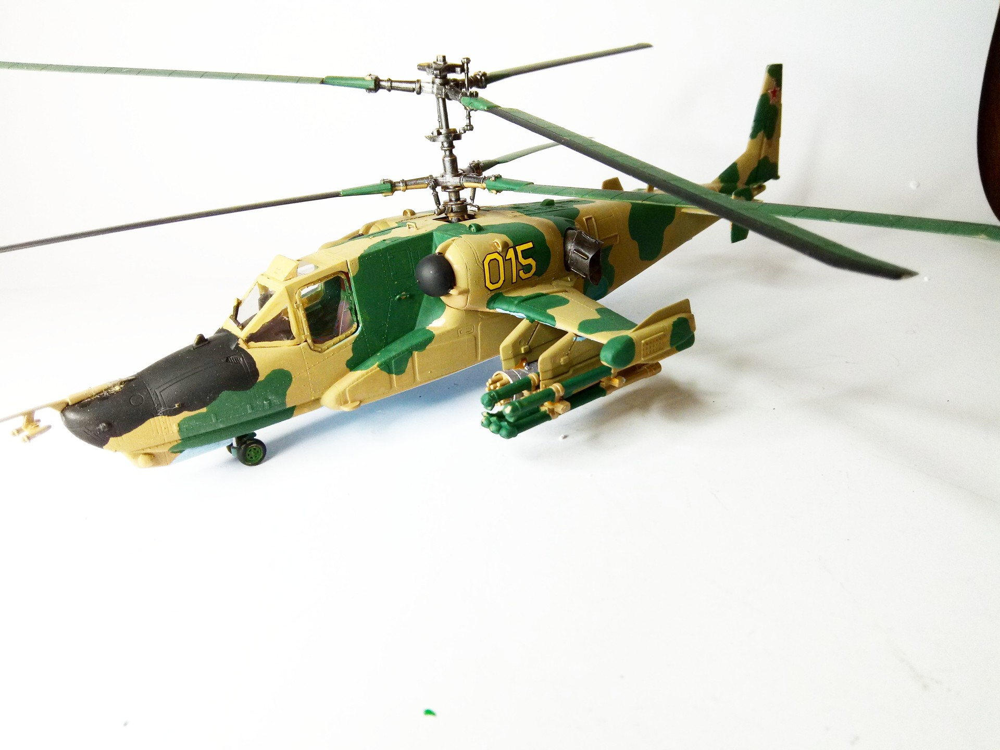
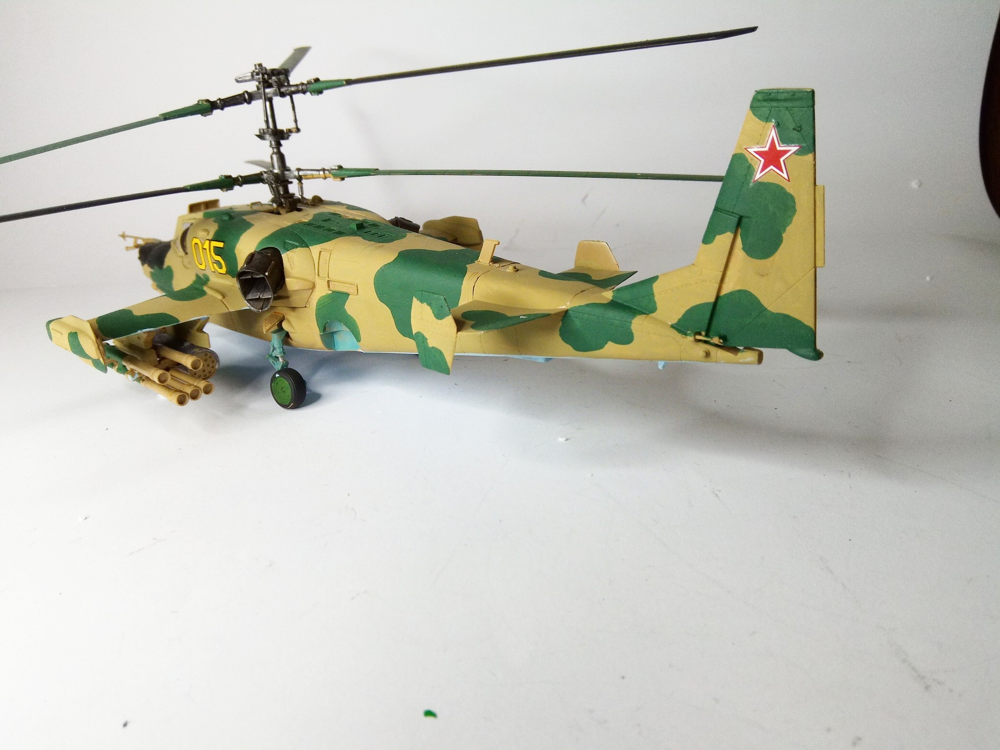

Aerei · scale model archive
Kamov KA-50 Hokum
Kamov KA-50 Hokum — Kit: Italeri, Scale: 1/48. Tashkent 1991 #1/48 #Italeri #Kamov #KA50

Photo gallery

English description
Tashkent 1991
#1/48 #Italeri #Kamov #KA50
Descrizione italiana
Tashkent, 1991.